Each strip is left = MS Word (ground truth), middle = ours (RedBat), right = eigenpal/docx-editor. Every panel is cropped to its page sheet and scaled to the same pixels-per-inch (same zoom), top-left page-aligned (same pan); faint blue lines are a 1-inch grid — read positions off the same line across panels.
✅ Font-fair: all three use the same Windows faces (Calibri/Cambria/Arial/Times from
artifacts/fonts/windows/). Generated by tools/docx-editor-compare/
(run-batch.sh + align-3way.sh).
Verdict across 12 audited fixtures: ours is closer to Word on more dimensions — notably pattern shading (docx-editor renders none), list indents, default line/paragraph spacing (docx-editor runs consistently tighter than Word), nested tables, and float top/bottom wrap. The two fixtures I first scored as our losses both dissolved under measurement (§③): gridspan-bottom-fit was a harness clipping artifact (our render is correct), and grid-style-borders measures as a match. So on this corpus I found no fixture where docx-editor renders Word more faithfully than we do — though the subtle spacing wins deserve the same pixel-measurement rigor before banking them.
Word fills pct5/pct10 gray shading + a green-stripe pattern. Ours renders all of them (close to Word). docx-editor renders every shaded cell as plain white — no pattern shading at all.
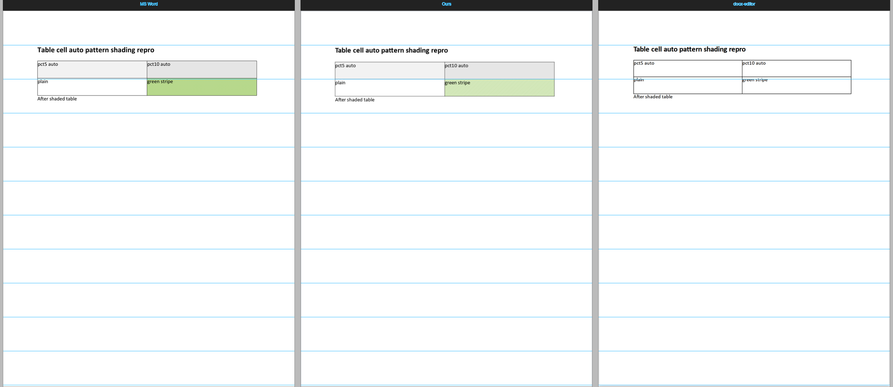
Word keeps every list level at the same default indent (no cascade). Ours matches on the gridlines; docx-editor cascades each nested level rightward + packs them tighter.
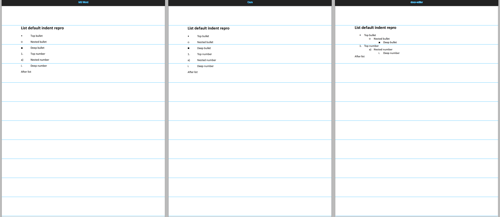
Both produce two columns; ours matches Word's text size/fill, docx-editor renders noticeably denser/smaller text.
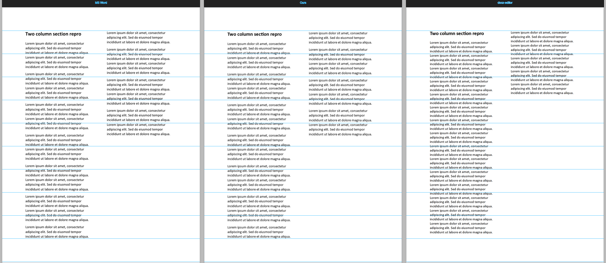
Nested table inside an outer cell. Ours matches Word's row heights; docx-editor renders the rows too compact.
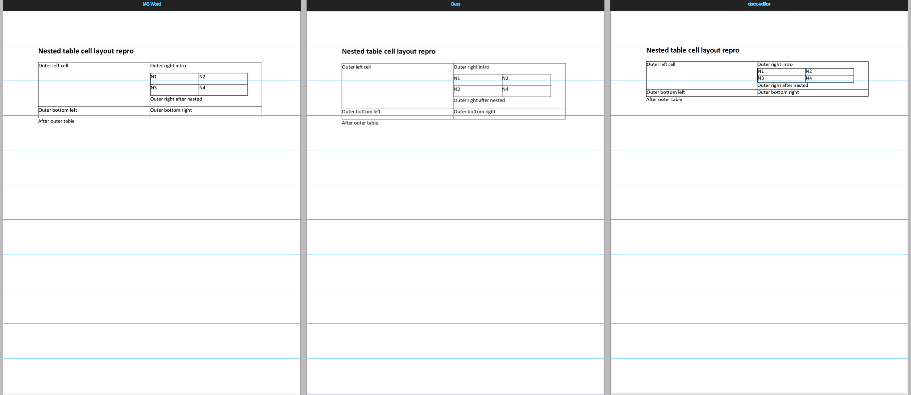
Header/footer positions match in all three, but docx-editor's inter-paragraph body spacing is too tight; ours matches Word.
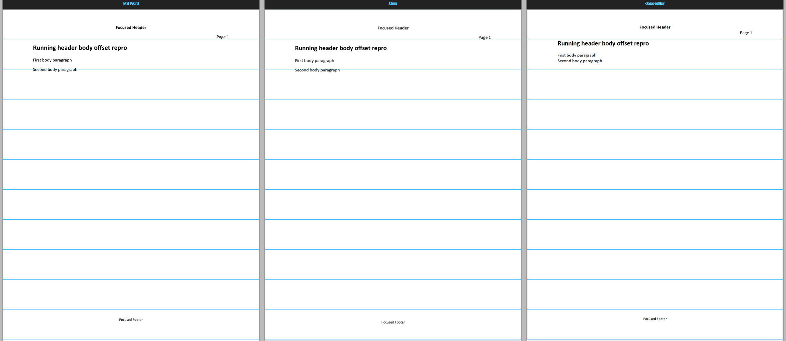
Top/bottom wrap = image full-width with text above and below. Ours matches Word; docx-editor mispositions the image (lower-right) and flows text around it instead.
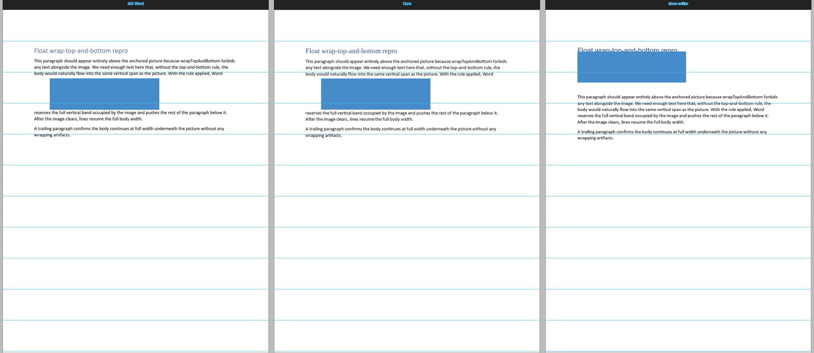
Justified body + footnotes with separator, all three. Ours tracks Word's line rhythm a touch
closer than docx-editor (whose body drifts slightly lower). Ours is justified here only because of the new
justifyLineToEdge fix.
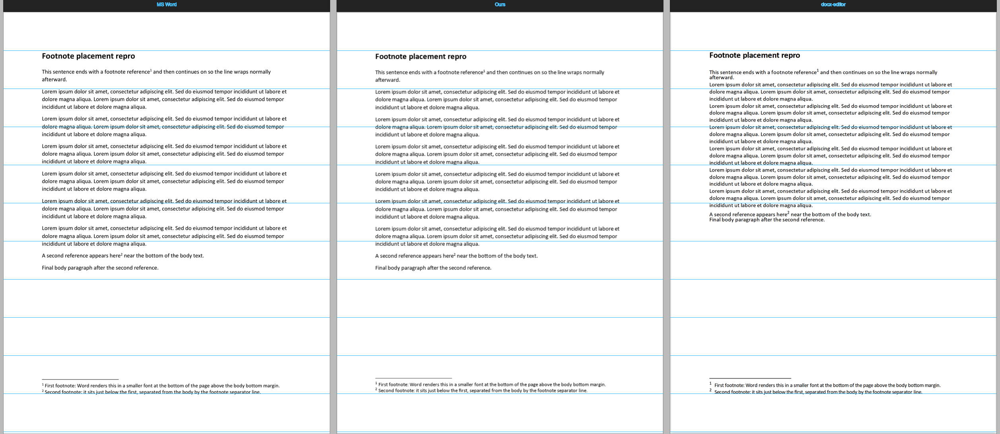
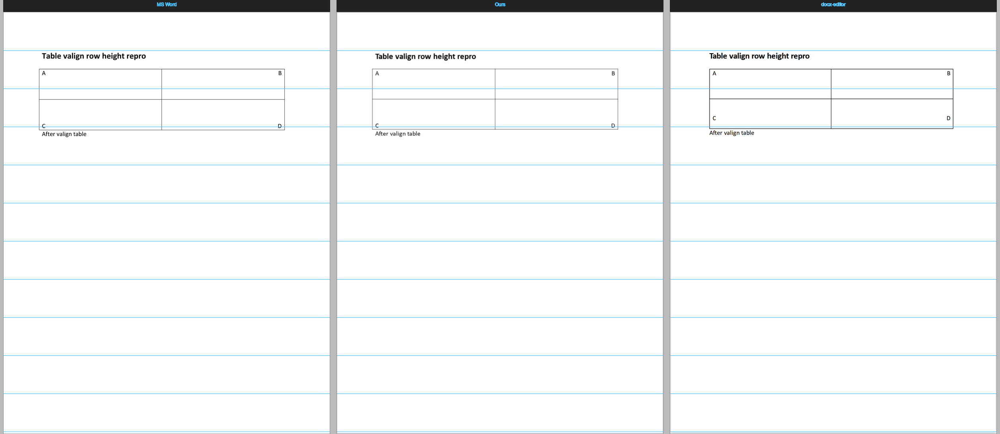
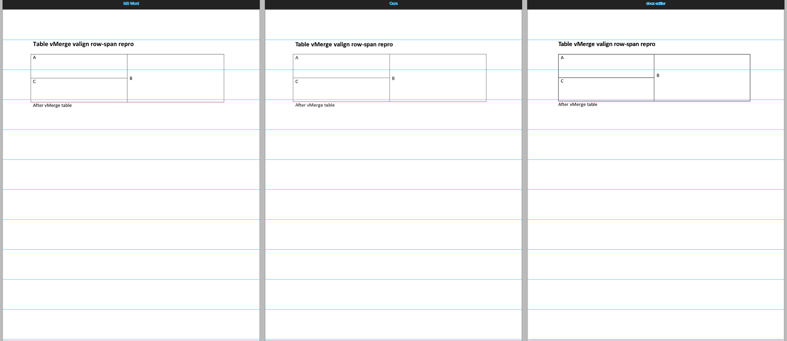
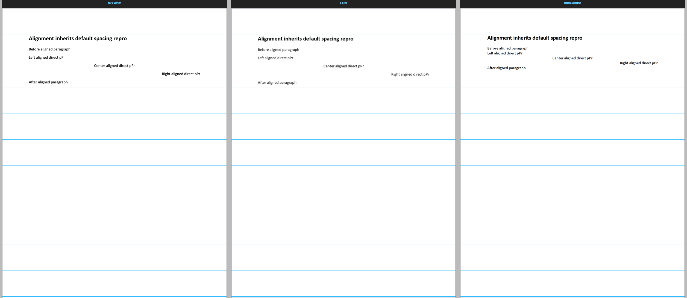
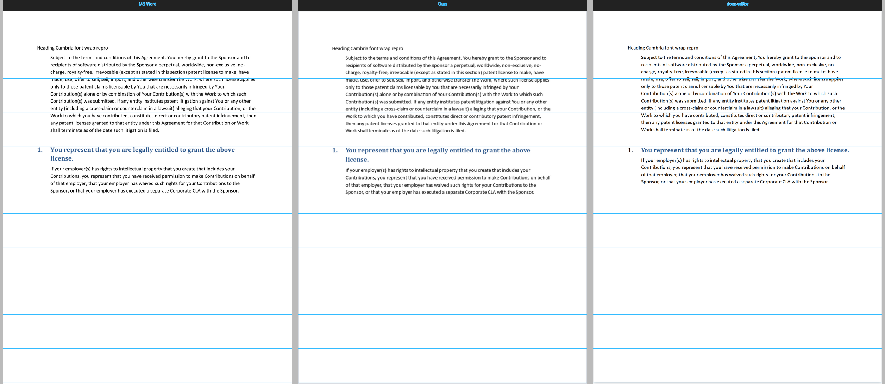
Both of these I first eyeballed as our losses; rigorous re-checking shows our renderer is correct. Kept here for the record (and as a caution: pixel-measure subtle calls, don't trust eyeballed triptychs).
The earlier "blank page" was my comparison harness clipping a multi-page (A4) doc at the default 1600px canvas — not a renderer defect. A full-height render shows our gridspan table (A spans 2 cols | B; C | D spans 2 cols) correctly placed at the bottom of page 2, matching Word's "bottom-fit". The harness now auto-sizes the canvas. (3-way page-aligned view N/A here: this is the only A4 fixture and its Word reference was captured at letter, so the panels aren't comparable.)
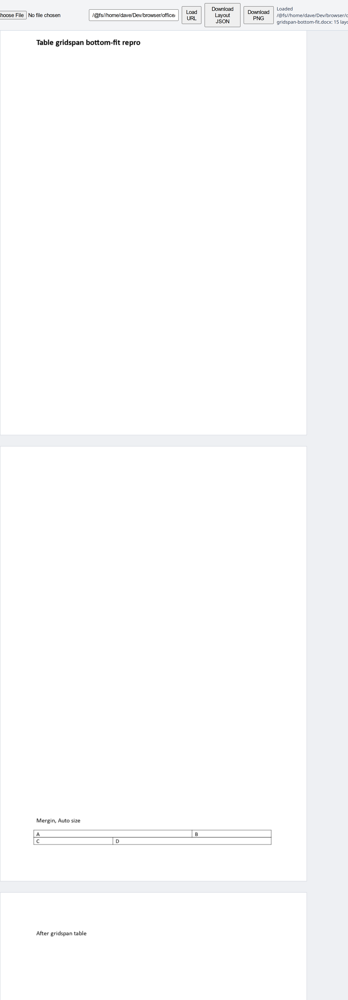
Pixel-measured at matched scale: Word and ours both have 31px row pitch and ~200px columns — ours matches Word, it is not over-sized. The triptych below merely looked off at a glance.
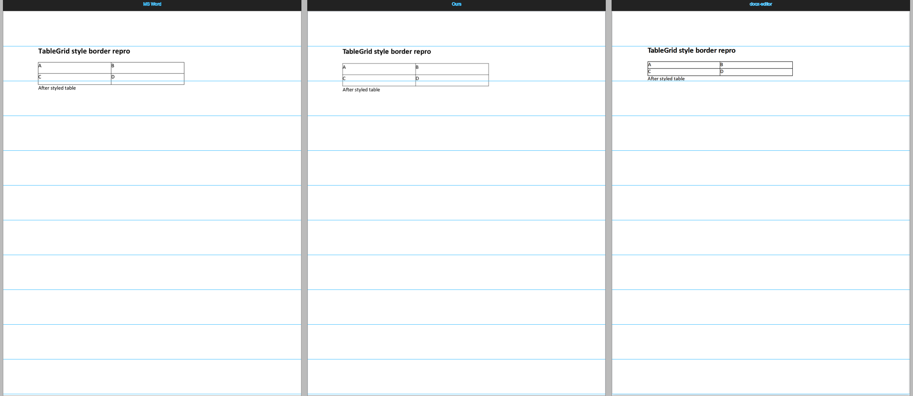
Rendered + aligned, pending a detailed call: float-image-wrap-square (ours looked competitive), float-image-paragraph-posv, endnote-placement, widow-control-last-line (density differs oddly at this zoom).
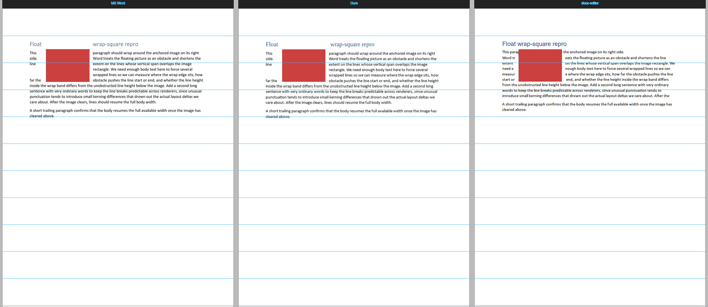
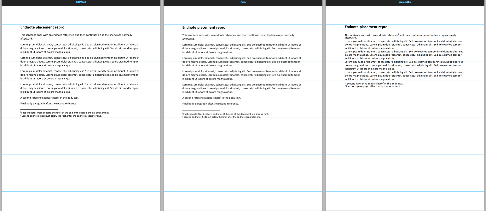
Code-driven audit surfaced three genuine gaps; all now fixed and verified. Fixtures in
tests/repros/word-audit/.
Was: every w:u@val collapsed to a single black line (model carried a bool).
Now: single/double/thick/dotted/dash/dot-dash/wavy/wavy-double + underline colour render distinctly
(canvas + PDF).
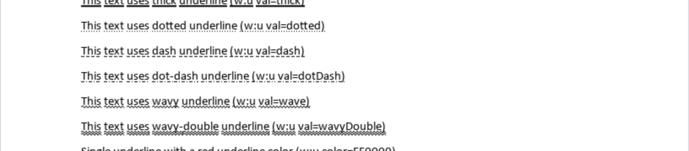
Was: only val="right" tabs read; every tab collapsed to a tiny default advance.
Now: all stop types parsed; numbers decimal-align at 3", the center tab centers, the 2" left tab is honored.
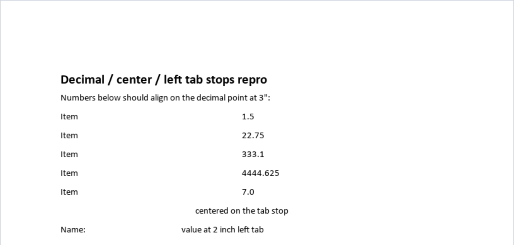
Was: w:bidi paragraphs left-aligned in logical order. Now (left=ours, right=docx-editor):
right-aligned with right-to-left token order. Minor inter-word spacing on reversed tokens remains; the deeper
fix is wiring ../text/bidi into the PDF/native glyph-positioning path.
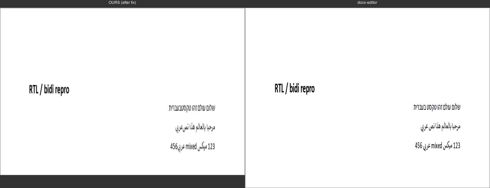
Reproduce one: node tools/docx-editor-compare/capture-ours.mjs <in.docx> out-ours.png,
… capture-docx-editor.mjs <in.docx> out-de.png, … align-3way.sh <name>.
Whole set: tools/docx-editor-compare/run-batch.sh. Word refs: docs/images/word/*-word.png.